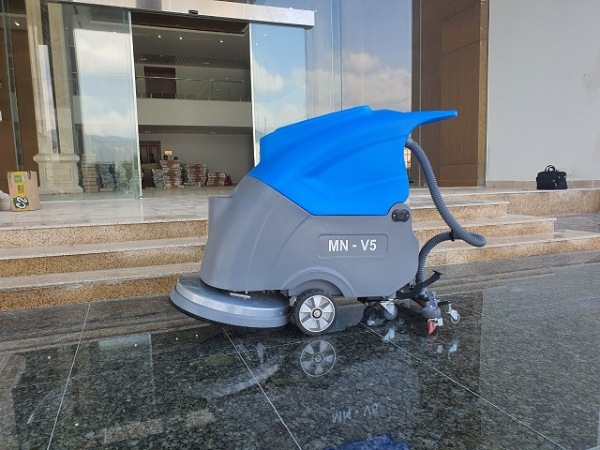
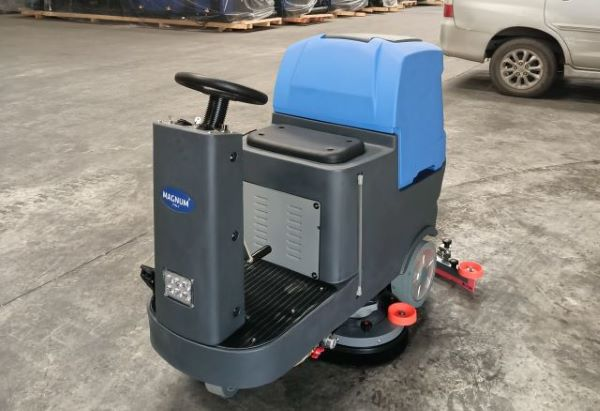
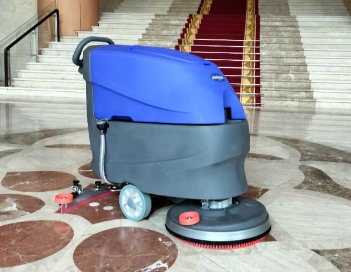

CHO THUÊ MÁY LAU SÀN, CHÀ SÀN VỆ SINH CÔNG NGHIỆP
Trong môi trường làm việc hiện nay, việc duy trì sự sạch sẽ và bảo dưỡng sàn nhà, văn phòng hay nhà xưởng là rất quan trọng. Đối với nhiều doanh nghiệp và tổ chức, việc sử dụng máy chà sàn là một phương tiện hiệu quả để giữ cho môi trường làm việc luôn sạch sẽ và an toàn. Tuy nhiên, việc mua một máy chà sàn mới có thể tốn kém và không phải lúc nào cũng phù hợp. Đây là lúc dịch vụ cho thuê máy chà sàn trở nên quan trọng. Bằng cách cung cấp sự linh hoạt và tiết kiệm chi phí, dịch vụ này không chỉ giúp các doanh nghiệp duy trì sự sạch sẽ mà còn tối ưu hóa hiệu suất làm việc. Hãy cùng tìm hiểu thêm về lợi ích và tính tiện lợi của việc cho thuê máy lau sàn trong bài viết dưới đây.
Khi nào nên sử dụng dịch vụ cho thuê máy chà sàn
- Bạn cần chà sàn nhà diện tích lớn: Việc sử dụng máy chà sàn sẽ giúp tiết kiệm thời gian và công sức so với chà sàn thủ công.
- Bạn cần chà sàn thường xuyên: Nếu bạn cần chà sàn thường xuyên, ví dụ như mỗi tuần một lần, thì việc thuê máy chà sàn sẽ tiết kiệm chi phí hơn so với mua máy mới.
- Bạn không có kinh nghiệm sử dụng máy chà sàn: Việc sử dụng máy chà sàn không đúng cách có thể làm hỏng sàn nhà. Do vậy, nếu bạn không có kinh nghiệm sử dụng máy chà sàn, bạn nên thuê dịch vụ cho thuê máy lau sàn để đảm bảo sàn nhà được chà sàn đúng cách và hiệu quả.

Lợi ích khi sử dụng dịch vụ cho thuê máy chà sàn
Dịch vụ cho thuê máy lau sàn ra đời nhằm hỗ trợ việc dọn dẹp và vệ sinh một cách tiện lợi và tiết kiệm chi phí hơn. Đây là một giải pháp phù hợp cho các tổ chức có hạn chế về tài chính và thiết bị vệ sinh công nghiệp.
Các máy chà sàn có mức giá dao động từ 10 triệu đồng. Tùy thuộc vào hiệu suất và chất lượng động cơ, giá có thể cao hơn vài chục triệu đồng. Đối với các nhà máy hoặc doanh nghiệp chỉ cần làm sạch bằng máy vài lần trong năm, việc đầu tư vào những máy có giá trị cao như vậy thường không hiệu quả.
Vì vậy, dịch vụ cho thuê máy chà sàn công nghiệp đang trở nên phổ biến, đáp ứng nhu cầu sử dụng máy vệ sinh không đều của nhiều tổ chức và doanh nghiệp.

Tất nhiên, việc thuê máy chà sàn cũng có những ưu và nhược điểm riêng. Trước khi quyết định thuê, người dùng cần xem xét kỹ lưỡng:
- Chi phí cho thuê máy chà sàn thường ít tốn kém hơn so với việc thuê dịch vụ vệ sinh từ bên ngoài.
- Tiết kiệm chi phí bảo trì và bảo dưỡng: Sử dụng máy chà sàn thuê, người dùng thường không cần lo lắng về chi phí bảo dưỡng và bảo hành như khi mua máy mới. Điều này đặc biệt hữu ích đối với các doanh nghiệp có nguồn lực tài chính hạn chế.
- Tránh rủi ro về hỏng hóc và hao mòn: Mọi máy móc đều có tuổi thọ và sự hao mòn, nhưng khi thuê máy chà sàn, người dùng không cần lo lắng về vấn đề này. Thay vào đó, họ chỉ cần trả tiền thuê theo thời gian sử dụng và đảm bảo bảo quản máy móc trong thời gian thuê.
- Tiết kiệm thời gian và không gian: Ngoài việc giảm chi phí nhân công và bảo dưỡng, việc thuê máy chà sàn cũng giúp tiết kiệm thời gian và không gian lưu trữ máy móc.
- Đảm bảo chất lượng công việc: Thuê máy chà sàn cho phép người quản lý kiểm soát chất lượng công việc vệ sinh và đặt ra các yêu cầu cụ thể cho nhân viên làm việc. Điều này giúp tránh được các vấn đề liên quan đến chất lượng dịch vụ khi thuê nhân công vệ sinh từ bên ngoài.
Những hạn chế khi thuê máy chà sàn là gì?
- Kiểm soát chất lượng sản phẩm không được đảm bảo: Việc cho thuê máy chà sàn thường liên quan đến việc sử dụng các thiết bị đã qua sử dụng nhiều lần. Máy sẽ không hoạt động hiệu quả và mạnh mẽ như khi mới mua. Trong những trường hợp tồi tệ nhất, doanh nghiệp thuê có thể nhận những máy cũ kỹ, động cơ yếu ớt, tiêu tốn năng lượng điện nhiều hơn. Điều này có thể dẫn đến việc không đảm bảo được chất lượng công việc, gây ra tình trạng sàn không được làm sạch kỹ, tăng chi phí điện,…
- Chi phí lâu dài có thể cao hơn: Mặc dù việc thuê máy chà sàn có thể mang lại lợi ích vì sử dụng thiết bị không thường xuyên. Tuy nhiên, đối với các doanh nghiệp có nhu cầu làm sạch sàn thường xuyên hơn, việc sử dụng dịch vụ thuê máy chà sàn có thể tạo chi phí lâu dài cao hơn so với việc mua máy mới, hiệu suất cao.
- Vấn đề liên quan đến hợp đồng: Người thuê máy chà sàn công nghiệp cần chú ý đến các điều khoản trong hợp đồng thuê. Điều này bao gồm cả giá thuê, thời gian thuê và các điều khoản về bồi thường nếu máy bị hỏng. Nếu các điều khoản không được xác định rõ ràng, người thuê có thể gặp phải các rắc rối phát sinh không mong muốn.

Bảng giá dịch vụ cho thuê máy lau sàn (thời gian làm việc 8 tiếng/ngày)
|
Loại máy |
Mô tả |
Giá thuê (VNĐ/ngày) |
|
Máy có cấu tạo đơn giản, dễ sử dụng, phù hợp cho các diện tích nhỏ. |
350.000 – 800.000 |
|
|
Máy có chức năng vừa chà vừa hút bụi, phù hợp cho các diện tích lớn. |
800.000 – 1.200.000 |
|
|
☑️ Máy chà sàn mini |
Máy có kích thước nhỏ gọn, phù hợp cho các khu vực hẹp, cầu thang. |
250.000 – 500.000 |
|
☑️ Máy đánh bóng sàn |
Máy giúp đánh bóng, tạo độ sáng bóng cho sàn đá, sàn gỗ. |
1.000.000 – 1.500.000 |
|
Máy có công suất lớn, giúp hút bụi bẩn, rác thải hiệu quả. |
500.000 – 1.000.000 |
Lưu ý: Đây chỉ là bảng giá tham khảo. Xin hãy gọi ICD CLEANING MACHINES qua hotline 024 2200 9188 để có được báo giá đúng nhất cho dịch vụ cho thuê máy chà sàn của từng loại máy.
Các loại máy chà sàn cho thuê
ICD CLEANING đang cho thuê máy chà sàn, máy lau sàn các loại phù hợp với nhiều công trình và loại sàn.
|
STT |
Tên sản phẩm |
Loại sàn phù hợp |
Công trình phù hợp |
Hiệu suất làm việc |
Dung tích thùng chứa |
|
1 |
Sàn epoxy, bề mặt sơn, bê tông, đất gạch,… |
Phòng bệnh viện, siêu thị, văn phòng, nhà hàng, trường học,… |
1.000 m²/h |
13/15L |
|
|
2 |
Sàn gạch, sàn đá, sàn sơn Epoxy,… |
Nhà xưởng, bệnh viện, siêu thị, tòa nhà văn phòng,… |
1.750 m²/h |
60/65L |
|
|
3 |
Sàn gạch, sàn đá, sàn sơn Epoxy,… |
Nhà xưởng, bệnh viện, siêu thị, tòa nhà văn phòng,… |
2.250 m²/h |
60/65L |
|
| 4 |
Nền gạch men, đá cẩm thạch, nền epoxy, sàn bê tông xi măng,… |
Tòa nhà văn phòng, nhà xưởng, bệnh viện, siêu thị, trung tâm thương mại,… |
2.250 m²/h |
60/65L |
|
| 5 |
Sàn gạch, sàn đá, sàn sơn Epoxy,… |
Tòa nhà văn phòng, tầng hầm chung cư, nhà xưởng lớn, bệnh viện, siêu thị, trung tâm thương mại,… |
4.200 m²/h |
85/95L |
|
| 6 |
Sàn gạch, đá cẩm thạch, nền epoxy, sàn bê tông xi măng,… |
Tòa nhà văn phòng, tầng hầm chung cư, nhà xưởng lớn, bệnh viện, siêu thị, trung tâm thương mại,… |
4.875 m²/h |
110/120L |
|
| 7 |
Sàn gạch ceramic, đá cẩm thạch, nhựa epoxy, xi măng,… |
Siêu thị, trung tâm thương mại, bệnh viện, khách sạn, ga tàu điện ngầm,… |
5.500 m²/h |
115L |
|
| 8 |
☑️ Máy đánh sàn đơn |
Sàn gạch, sàn đá, sàn sơn Epoxy…và thảm |
Khách sạn, nhà hàng, nhà xưởng, nhà kho, bệnh viện, trường học, sân bay,… |
– |
– |
Quy trình cho thuê máy chà sàn
- Liên hệ với công ty cho thuê: Gọi điện thoại hoặc truy cập website của ICD CLEANING MACHINE để tìm hiểu về các loại máy chà sàn và giá cả.
- Chọn loại máy chà sàn: Lựa chọn loại máy phù hợp với nhu cầu sử dụng của bạn.
- Đặt lịch thuê máy: Xác định thời gian và địa điểm nhận máy.
- Ký hợp đồng thuê máy: Đọc kỹ hợp đồng trước khi ký để đảm bảo quyền lợi của bạn.
- Đặt cọc và thanh toán: Đặt cọc một khoản tiền và thanh toán chi phí thuê máy.
- Nhận máy và hướng dẫn sử dụng: Nhân viên công ty sẽ hướng dẫn bạn cách sử dụng máy chà sàn an toàn và hiệu quả.
- Sử dụng máy chà sàn: Sử dụng máy chà sàn theo đúng hướng dẫn và đảm bảo an toàn.
- Trả máy: Trả máy đúng thời hạn và kiểm tra lại tình trạng máy.
- Thanh toán chi phí còn lại: Thanh toán chi phí còn lại sau khi trừ đi tiền đặt cọc.
Lưu ý khi sử dụng dịch vụ cho thuê máy lau sàn
Sau khi xem xét cẩn thận về các ưu điểm và hạn chế khi sử dụng dịch vụ thuê máy chà sàn công nghiệp, dưới đây là một số kinh nghiệm quan trọng mà bạn có thể tham khảo!
Lựa chọn địa chỉ uy tín
Để đáp ứng nhu cầu ngày càng tăng về việc thuê máy chà sàn bê tông, thị trường hiện có nhiều đơn vị cung cấp dịch vụ cho thuê máy chà sàn tại Hà Nội và Hồ Chí Minh. Tuy nhiên, để chọn được máy chất lượng với mức phí hợp lý, bạn nên ưu tiên lựa chọn những địa chỉ cho thuê có uy tín. Đặc biệt, việc tham khảo đánh giá từ các khách hàng trước đây sẽ giúp bạn có quyết định chính xác hơn.
Chi tiết dịch vụ tại địa điểm
- Địa chỉ cho thuê máy chà sàn Hà Nội
- Địa chỉ cho thuê máy chà sàn Hồ Chí Minh
Kiểm tra vận hành thử trước khi thuê
Thay vì chỉ dựa vào tư vấn từ đơn vị cho thuê, bạn nên tự thử vận hành máy để có cái nhìn chính xác về trải nghiệm sử dụng. Nhờ đó, bạn có thể lựa chọn được thiết bị phản hồi tốt nhất theo yêu cầu về làm sạch và đánh bóng.
Chọn hình thức thuê máy chà sàn công nghiệp tốt nhất
Tùy thuộc vào nhu cầu sử dụng, khách hàng có thể lựa chọn giữa hai hình thức thuê là thuê theo ngày hoặc thuê lâu dài. Thông thường, khi thuê lâu dài, khách hàng sẽ nhận được mức giá ưu đãi hơn. Tuy nhiên, các đơn vị cần phải đưa ra quyết định dựa trên diện tích mặt sàn cần làm sạch và tiến độ công việc để lựa chọn hình thức thuê máy phù hợp nhất.
Hợp đồng điều khoản khi xảy ra sự cố
Việc kiểm tra và thảo luận cẩn thận về các điều khoản, nghĩa vụ và quyền lợi trong hợp đồng thuê cũng là một phần quan trọng không thể bỏ qua. Thường thì sau khi máy được bàn giao từ đơn vị cho thuê, nếu có sự hỏng hóc xảy ra, người thuê sẽ phải chịu chi phí sửa chữa tương ứng.
Để tránh tranh cãi và chi phí không đáng có, khi thuê máy, bạn cần chú ý đến các điều khoản trong hợp đồng thuê. Hơn nữa, việc kiểm tra kỹ lưỡng khi nhận máy là điều cần thiết, giúp tránh được tình trạng máy đã hỏng trước khi thuê.
Thương lượng mức giá rõ ràng trước khi thuê
Đừng quên so sánh giá thuê máy chà sàn từ nhiều đơn vị cung cấp dịch vụ, đồng thời đánh giá chất lượng và uy tín để tìm ra đối tác phù hợp nhất! Nếu bạn có kế hoạch thuê máy trong thời gian dài hoặc với số lượng lớn, hãy thương lượng để đạt được mức giá ưu đãi nhất.
Cho thuê máy chà sàn đóng vai trò quan trọng trong việc đáp ứng nhu cầu vệ sinh và bảo dưỡng sàn của các doanh nghiệp và tổ chức. Dịch vụ cho thuê máy lau sàn đã trở thành lựa chọn hàng đầu cho nhiều doanh nghiệp là sự tiện lợi, linh hoạt và tiết kiệm chi phí. Từ việc giảm bớt gánh nặng về bảo trì, đến việc tối ưu hóa hiệu suất làm việc, cho thuê máy lau sàn đã đóng góp tích cực vào sự phát triển của các ngành công nghiệp và dịch vụ. Đồng thời, việc này cũng đem lại nhiều cơ hội kinh doanh và phát triển cho các doanh nghiệp cung cấp dịch vụ cho thuê máy chà sàn. Chắc chắn rằng, với sự tiện ích và hiệu quả mà nó mang lại, dịch vụ cho thuê máy lau sàn sẽ tiếp tục phát triển mạnh mẽ trong thời gian tới.
 Tư vấn cách chọn lựa máy chà sàn nhà gia đình
Tư vấn cách chọn lựa máy chà sàn nhà gia đình Có nên mua máy hút bụi công nghiệp cho gia đình?
Có nên mua máy hút bụi công nghiệp cho gia đình? TOP 5 máy hút bụi công nghiệp 3000W bán chạy đáng đầu tư
TOP 5 máy hút bụi công nghiệp 3000W bán chạy đáng đầu tư